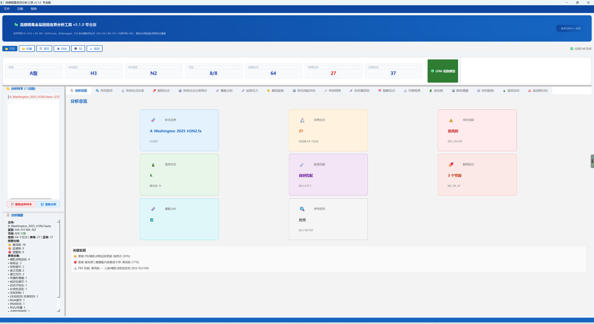
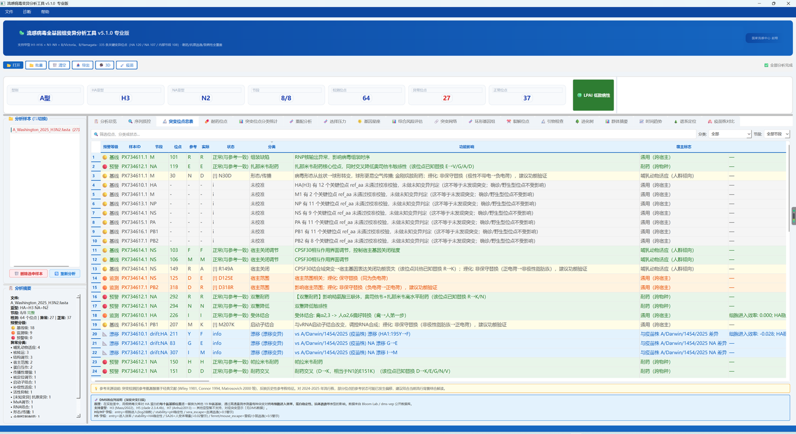
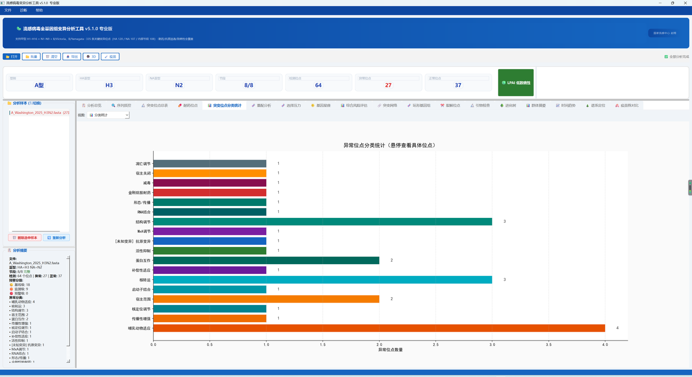
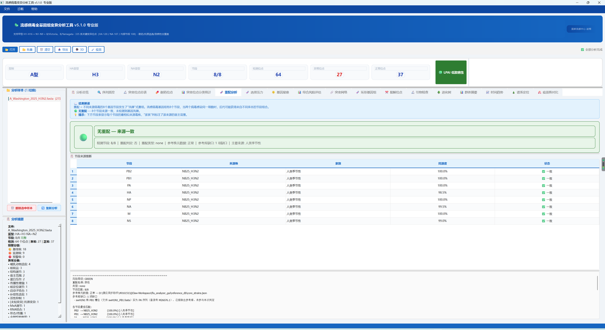
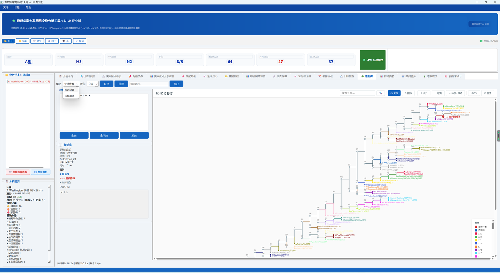
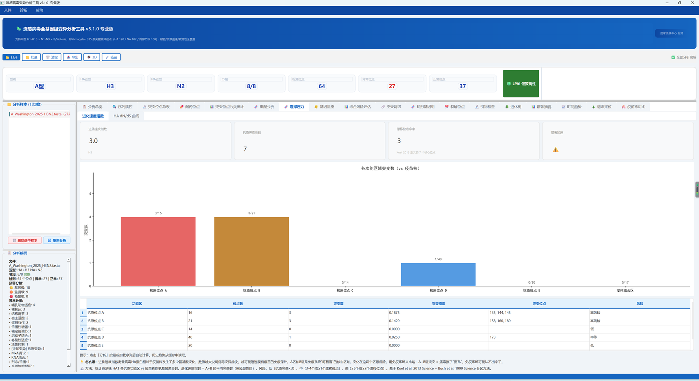
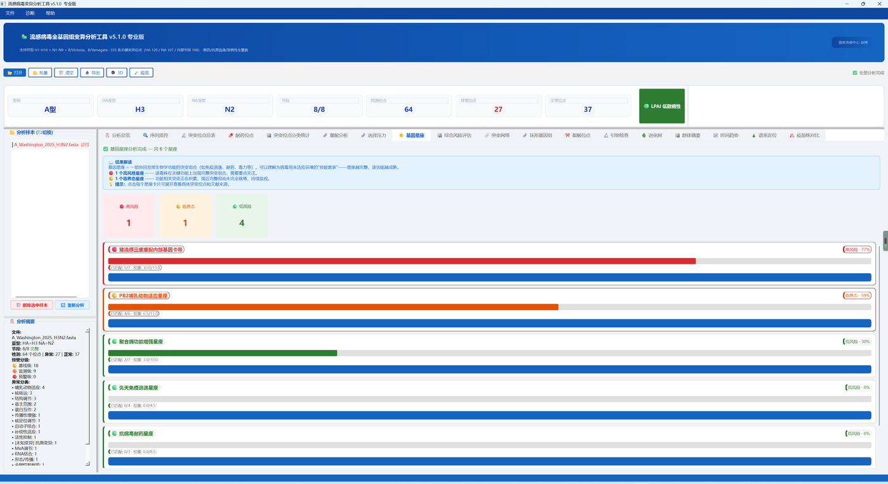

流感病毒全基因组变异分析工具 · Windows 桌面端
输入一份 8 节段 FASTA 基因组序列，自动完成亚型鉴定、各节段翻译、335 条位点的突变检测、 耐药分析、选择压力评估、重配来源推断、基因星座完整性评估与谱系定位， 并把结果导出为 Word、Excel 或 Markdown 报告。
如需安装包，请邮件联系 zhaoxiang@ivdc.chinacdc.cn。
分析能力
下列每一项都对应软件里的一个实际视图。单样本与批量样本共用同一套视图， 批量分析后群体摘要与时间趋势会自动填充。
单样本与批量样本的摘要看板，关键指标一屏收口，点击卡片跳转到对应视图。
读码框完整性、终止密码子与异常截断、各节段翻译长度与预期比较、CDS 起始密码子验证，逐节段给出评分。
多样本横向汇总与关键突变对比，批量分析完成后自动切换到群体口径。
335 条位点记录，三层风险分级（预警 / 监测 / 基线）与宿主标志分类，每条附功能影响和参考文献。
NA 抑制剂（奥司他韦、扎那米韦、帕拉米韦）、M2 离子通道、PB2 巴洛沙韦相关位点，含 N3/N7/N8 到 N2 坐标的等效映射。
按变异类别与宿主标志的分布图表，配基因组浏览器风格的位点图谱。
HA 裂解位点序列展示与 HPAI / LPAI 判定，按 P1–P5 / P1′–P5′ 标准标注。
引物与目标序列的匹配检查。
8 个节段的环形视图，可按变异类别筛选显示。
以 phi 系数构建突变共现网络，用图连通分量识别功能模块。
骨架树加样本放置的系统发育视图，支持按分支与性状着色，可导出 PNG / SVG / PDF / HTML。
基于 Nextclade 数据集与 IQ-TREE 2 最大似然法的 clade 分配；不支持的亚型自动隐藏该视图。
8 个节段的来源推断与重配模式识别，逐节段标注最近代表株来源。
已知基因星座完整度评估，列出已匹配的标志突变与缺失的关键突变。
按采样时间展开的趋势分析，用于批量样本的时间序列观察。
致病性、人畜适应、配方新颖度、宿主四个维度的评分，并给出临界态提示。
各功能区突变密度与历史基准比较，内置 Nei–Gojobori 计数与 Fisher 精确检验。
与推荐疫苗株的氨基酸差异，按 HA1 功能区标注差异等级。
界面
以下截图取自 v5.1.0 实机运行，样本为 A/Washington/2025 H3N2 全基因组 FASTA（8 节段完整）。 未做任何美化或重绘，界面即为你会看到的界面。







方法学说明
分析工具的可信度来自方法的透明。以下几条明确说明每个环节的实际实现， 避免把"检测到了某个工具"读成"用了这个工具出数"。
dN/dS 相关判读由内置的 Nei–Gojobori 计数 + Fisher 精确检验完成。未运行 HyPhy FUBAR，软件界面与导出报告中都已明示这一点；即使本机装有 HyPhy，也不会自动改用它出数。
节段来源判断走 Biopython 序列比对 + 滑动窗口同源比对与迭代分配，不需要额外安装 BLAST+，也不产生 BLAST 输出文件。
IQ-TREE 2 用于最大似然建树，Nextclade CLI 用于谱系定位，MAFFT 用于多序列比对（随包捆绑）。任一缺失时回退到内置实现并在界面上说明回退原因，不阻塞基础分析。
每条位点结果取 confirmed / unknown / wildtype / nocall / info 五态之一。「这个位点没读到」(nocall) 不计入异常数、不按风险着色，与「读到了但意义未知」(unknown) 分开呈现。
输入的 FASTA 序列全程在本机处理，软件不向任何服务上传序列。唯一的网络行为是 3D 结构视图按需从 RCSB / EBI 拉取公开结构文件，且优先使用本地缓存。
获取安装包
当前不提供直链。如需安装包，请邮件联系 zhaoxiang@ivdc.chinacdc.cn， 注明单位与使用场景。以下是本版本安装包的完整规格与校验值，收到文件后可据此自查完整性。
| 文件名 | FluMutationAnalyzer_v5.1.0.exe |
|---|---|
| 版本 | 5.1.0 |
| 平台 | Windows 10 / 11 · x64（无 macOS / Linux 版本） |
| 体积 | 311,905,074 字节（约 297 MiB） |
| SHA-256 | e3b7944f76a061e3299b306125cf9d0c69f91dfa88a5cef545f5d0882776ad9d |
| 安装方式 | 单文件可执行程序，免安装，双击运行 |
安装包未做代码签名。首次运行时 Windows SmartScreen 可能弹出「Windows 已保护你的电脑」，这是未签名程序的正常提示，不代表文件被篡改：点击「更多信息」→「仍要运行」即可。部分杀毒软件也可能对 PyInstaller 单文件可执行程序报可疑；如单位有终端管控，请先走信息安全报备流程。
文件属性中不含版本信息。右键「属性 → 详细信息」看不到版本号，请以文件名 FluMutationAnalyzer_v5.1.0.exe 和上表的 SHA-256 为准判断版本与完整性。
校验方法：在文件所在目录打开 PowerShell 执行
Get-FileHash .\FluMutationAnalyzer_v5.1.0.exe -Algorithm SHA256，
结果应与上表逐字符一致。
运行环境
pip install -r requirements.txt 后 python main.py